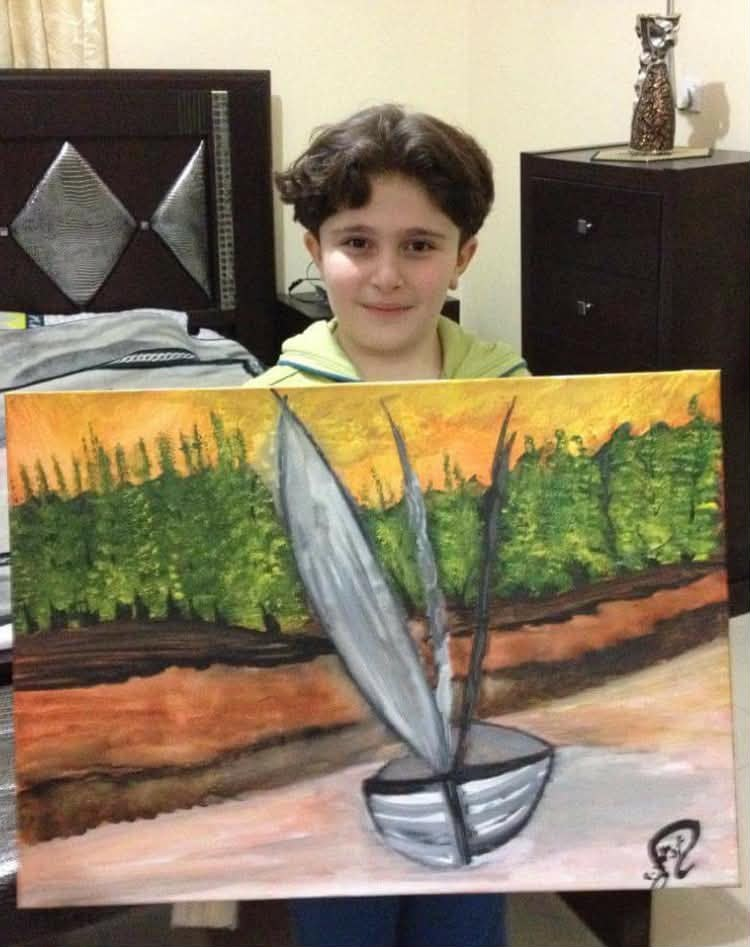

Drawing, painting, and performance
A dated record of work by Aws Almir Ahmad, made between January 2013 and 2026 in Saudi Arabia and in Canada. Sixteen surviving artworks, six recordings from a Syrian children’s choir, and separate records for theatre and wrestling. Select any image to open it full size, where you can zoom and turn it.

- Span
- 2013–2026
- Artworks
- 16
- Recordings
- 10
- Art and choir hours
- 420
Artwork made under instruction, 2013 to 2018
Mentored by artist Rawiah Harba in Saudi Arabia. Eight archived works survive from this period, between March 2013 and July 2015. Work carried on to 2018 at roughly one project every three to four months, but those pieces were never photographed and most are no longer accessible.
Ancient Homes
The first surviving piece. Every house takes a different colour, which was the exercise.
Study of a Horse
An anatomy exercise, worked from observation rather than from imagination.
Cartoon character study, mouse
Line and colour practice done by copying a frame from a cartoon.
Copy of an existing copyrighted character. Not an original composition.
Syrian Children’s Choir, January 2013 to January 2015
A choir assembled in Saudi Arabia after the war broke out in Syria, formed so that displaced Syrian children could keep imagining a future for the country through song, poetry and art. Weekly rehearsals of about three hours, October through April, paused each summer. The recordings are further down this page.
Seven Fish
There are eight fish on the page. Seven were coloured, each with a body shape of its own. The eighth was left in pencil and is not counted, because it has no colour.
The City of Strangers
A crowd of faceless figures filling a street between apartment blocks. Made during the choir years, and the largest drawing of that period.
Romantic Horses
First work on canvas in oil, taken on after eighteen months of drawing on paper.
The Island
Built up with a palette knife to give the treeline texture against a flat sky.
The Boat
The last piece made before the choir ended. It appears again at the top of this page, held, a few days after it was finished.
Paused, 2018 to 2020
No work was made during this period.
Artwork made independently, 2021 to 2025
Work resumed in January 2021 without instruction. Eight archived works follow. Output held steady through 2021 and 2022, then slowed after the move to Canada in July 2022, where the practice continues alongside university, work and competitive wrestling. Aws and Rawiah Harba still meet once or twice every six months to go over current work.
Two Skies
The first piece after the pause. The page is split down the middle into a cold half and a hot one.
The Leaves of Death
Branches and leaves worked in a single ink weight until they filled the page.
Cartoon character study, cat
The same kind of exercise as the 2013 mouse, eight years later.
Copy of an existing copyrighted character. Not an original composition.
Field Fire
The only fully abstract piece in the archive. Stems fan across a field of flat colour.
Maples
Painted three months before leaving for Canada.
Poppies
A field worked in short broken marks, with the moon left as a single flat disc.
The Green River
The largest and slowest piece in the archive, and the last before the move.
Round Panel
Made in Ottawa. The same subject as the 2015 canvas, cut down to a palm-sized disc.
Syrian Children’s Choir
Six recordings from 2013 and 2014, published publicly at the time, grouped by the kind of performance. Performers other than Aws are not named here.
Poetry recitation
Classical Arabic verse, learned and performed from memory.
 Abu Firas al-Hamadani, the poet-knight24 March 2014. Individual performance.
Abu Firas al-Hamadani, the poet-knight24 March 2014. Individual performance.

Five Messages to My Mother
22 April 2013. Group recitation.
To My Brother
24 May 2014.Song
Pieces carried by the full choir.

Helwa Ya Baladi
25 April 2013. A song for a beautiful homeland.
Mother's Day song
26 April 2013.Stage
Performance without words.

Pantomime
25 May 2013.School theatre
Acted in school theatre in Saudi Arabia from grade 8, rehearsing two hours a day, five days a week through the months before each competition, under director Moayad Hakim. Competed in the Ministry of Education’s national school theatre competitions. Placed second of 60 actors across the Medina region in 2017, and third of 90 across nine educational administrations in 2019, when the production placed third for Best Show. Stopped after moving to Canada.

The Seller of Wisdom
Al Aqeeq National and International Schools. Played the King.
School Theatre Competitions, Al-Ahsa Education, Group Two
Competition report. Awarded third best actor.Wrestling
Freestyle wrestling, nine hours a week year-round across three clubs: NCWC, the University of Ottawa club, and OMA Eagles. Drilling and sparring with the senior group under Coach Mohammed Alkarad, who guides strength, conditioning, periodisation and mentality work. Competing at 79 kg toward Team Canada placement, with silver at the Matman Classic multi-provincial tournament in December 2024 and bronze in December 2025, after not placing in the first three tournaments. More footage is on the YouTube channel.

Matmen Wrestling Tournament 2026
Summer. Takedown division, 82 kg.
The Peace Within
A short film Aws appears in. Its subject: every person needs to fulfil the body and the soul, and it is made for those seeking inspiration to be disciplined in their body and to fulfil their soul with Allah.How the hours were counted
Each activity is counted separately, because each has its own verifier. Art hours trace to individual works, so unarchived pieces are excluded and that figure is a floor rather than a full account.
| Work | Date | Hours |
|---|---|---|
| Ancient Homes | March 2013 | 4 |
| Study of a Horse | August 2013 | 3 |
| Cartoon character study, mouse | August 2013 | 2.5 |
| Seven Fish | January 2014 | 4 |
| The City of Strangers | May 2014 | 8 |
| Romantic Horses | November 2014 | 30 |
| The Island | January 2015 | 25 |
| The Boat | July 2015 | 30 |
| Two Skies | January 2021 | 5 |
| The Leaves of Death | May 2021 | 6 |
| Cartoon character study, cat | August 2021 | 2.5 |
| Field Fire | January 2022 | 20 |
| Maples | April 2022 | 25 |
| Poppies | July 2022 | 30 |
| The Green River | August 2022 | 35 |
| Round Panel | January 2025 | 10 |
| Sixteen archived works | 240 |
| Season | Basis | Hours |
|---|---|---|
| 2013 to 2014 | About 30 weeks, 3 hours weekly | 90 |
| 2014 to 2015 | About 30 weeks, 3 hours weekly | 90 |
| Two seasons, October to April | 180 |
| Basis | Hours |
|---|---|
| Three major productions, grade 8 to grade 11. Rehearsals two hours a day, five days a week through a four-month block before each competition, plus script preparation between blocks and travel to competitions in other regions. | 600 |
| Verified by Moayad Hakim | 600 |
| Basis | Hours |
|---|---|
| About nine hours a week year-round, heavier from October to March when the competitive season runs. Own training and competition hours only. Classes attended at OMA Eagles are separate from paid supervision of that programme and from founding the University of Ottawa club. Tournaments add travel and weigh-in days on top of the weekly schedule. | 1220 |
| Verified by Mohammed Alkarad | 1220 |
| Visual art, 2013 to 2025 | 240 |
| Syrian Children’s Choir, 2013 to 2015 | 180 |
| School theatre, 2016 to 2020 | 600 |
| Wrestling, 2024 to 2026 | 1220 |
| All four activities | 2240 |
What this archive does not hold
Pottery, clay work and copper tooling were a regular part of the training between 2013 and 2018. None of it is accessible now, and none of it is counted in the hours above. Drawings and paintings made between 2016 and 2018 were not photographed either. The sixteen works on this page are the surviving record, not the full output.
Verification
Each activity has one person who can confirm it. Contact details are supplied directly to admissions offices and are not published here.
Art mentor and assistant lead, Syrian Children's Choir
Can confirm the mentorship from 2013, the choir dates and rehearsal pattern, the six recorded productions, and the independent work since 2021.
School Theatre Director, Al Aqeeq International School, American Section
Can confirm the theatre roles, productions and competition results.
Head Coach, OMA Eagles MMA School
Can confirm training across the three clubs, competition entries and placements.